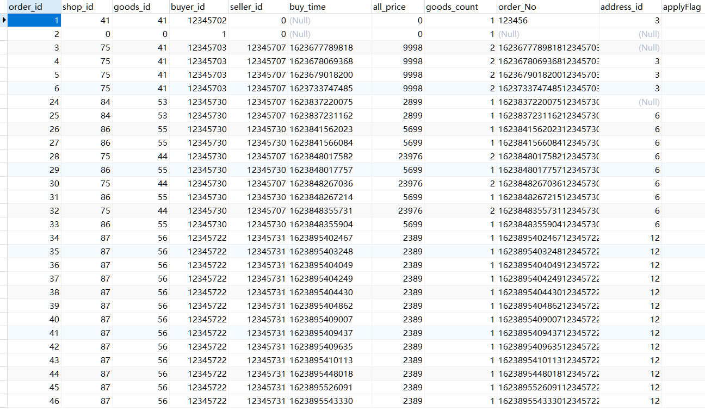
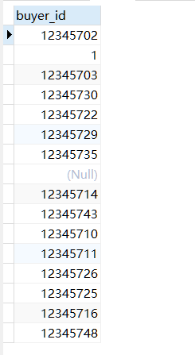
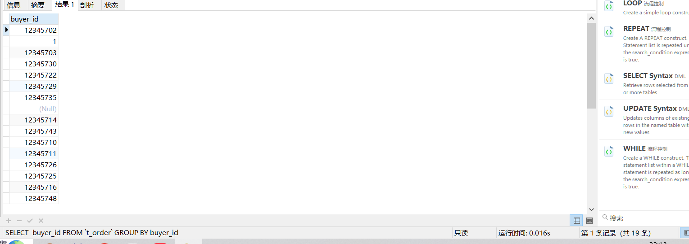
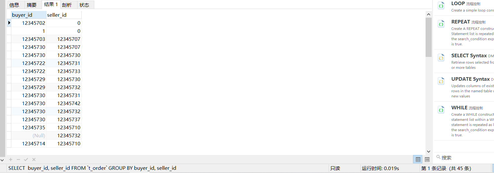

去重时distinct和group的区别
首先我们先来了解下distinct和group的用法
distinct可以对列进行去重的操作，但是对于多列和单列是不同的。

对于单列进行去重
例如对于order表进行buyer_id去重,然后我们会得到下面的结果,它会留下一个为null的值，然后其他的值都为唯一。
SELECT DISTINCT buyer_id FROM `t_order`

对于多列进行去重操作
多列的话，我们采用buyer_id,和seller_id,这样一定会有重复的值，我们可以进行观察去重后的结,需要注意判断空值。
SELECT DISTINCT buyer_id, seller_id FROM `t_order`

使用groupby实现上述行为
SELECT buyer_id FROM `t_order` GROUP BY buyer_id

SELECT buyer_id, seller_id FROM `t_order` GROUP BY buyer_id, seller_id

具有相同的效果，DISTINCT 更适用于简单的去重需求，而 GROUP BY 则更适用于需要进行分组和聚合计算的情况。DISTINCT是对查询的结果集去重，会考虑所有的选择的列，而GROUP BY 用于对结果集分组。
当使用DISTINCT时，数据库引擎可以快速识别并返回唯一的值，而不必进行额外的分组和聚合计算。相比之下，使用GROUP BY时，数据库引擎需要对结果集进行分组，并且可能需要执行聚合函数计算，这可能会导致一定的性能开销。
优化查询的效率取决于具体的数据库引擎、表的大小、索引等因素。在一些情况下，数据库引擎可能会对GROUP BY进行优化，使其效率与DISTINCT相当。